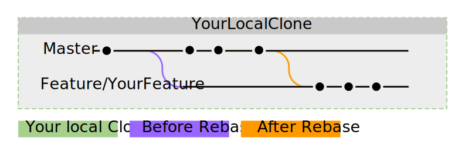

Praca z Git(Hub)¶
Jeśli chcesz pomóc w tworzeniu Sponge, masz niesamowity dodatek do API, lub chcesz poprawnić nasze dokumenty, to musisz zapoznać się z git oraz GitHub. Jeśli jesteś już obeznany z forkiem, branch, issues, pull-requestami i commitsami to możesz pominąć ten temat. Jeżeli nie masz pojęcia o czym piszemy to czytaj dalej.
Informacja
Ten przewodnik zakłada, że przeczytałeś Instalacja Git i masz już skonfigurowany swój komputer z wybranym klientem Git.
Podstawowa koncepcja Git i GitHub¶
Git pozwala wielu różnym programistom do opracowania jednego kawałka oprogramowania w tym samym czasie. GitHub jest na stronie internetowej, gdzie Deweloperzy mogą współpracować i dzielić się swoją pracą z innymi. GitHub opiera się na zarządzaniu współpracą Git.
Wskazówka
If you’re unfamiliar with the Git and GitHub vocabulary, have a look at the glossary page on GitHub.

W tym przypadku repozytorium jest nazwane SpongePowered, posiada one dwa Branche o nazwach master i feature 1 i również mają commity obu branchy.
Pora umieścić te warunki w kontekście - począwszy od repository. Repozytorium (skrót: repo) jest miejscem, gdzie projekt przechowuje swoje pliki. Repozytoria SpongePowered znajdują się w GitHub. To repozytorium ma jednak pewne ograniczenia dostępu do zabezpieczenia go od niechcianych i szkodliwych zmian. Nie można po prostu zmienić samowolnie, repo jest tylko do odczytu dla zwykłych użytkowników. Teraz można się zastanawiać na temat propozycji i zmian. Tak więc tutaj forki wchodzą w gre. Możesz pobrać kopię z repo SpongePowered i dokonać zmian. Kiedy skończysz, możesz otworzyć go jako żądanie replikacji ściągniętej (Pull-Request = PR) na nasze repozytorium. Twoje propozycje uzupełnień i zmiany teraz mogą być przeglądane, a personel powie Tobie jeżeli coś jest źle, lub wymaga poprawy i ostatecznie zostanie scalone do PR.
Krótkie podsumowanie procedury opisanej powyżej, zanim przejdziemy do szczegółów:
Fork repozytorium to twój wybór
Sklonuj go do twojego komputera
Stwórz nowy branch
Dokonaj odpowiednich zmian
Sprawdź, czy wszystko działa
Zatwierdź zmiany
Zsynchronizuj je do GitHub
Zaproponuj zmiany w PR do SpongePowered Repo
Zmodyfikuj PR, jeśli to konieczne
Twój PR zostanie wdrożony do głównego przez personel
A teraz szczegóły!¶
1. Forking a Repo¶
Informacja
Ten krok jest wymagany, jeżeli nie masz prawa Push do stworzenia zmian w Repo. Jeżeli pracujesz na swoim własnym repo, fork nie jest wymagany. Po prostu pomiń ten krok i clone bezpośrednio. Podczas wprowadzania zmian do Sponge i jeżeli nie jesteś pracownikiem, ten krok jest wymagany.
Teraz, gdy znasz podstawowe pojęcia to możemy omówić szczegóły. Najpierw musisz sforkować repozytorium jakie chcesz zmiany. Można to zrobić na GitHub.com, gdzie znajdziesz przycisk fork w górnej części strony repozytoriów. Po wciśnięciu go GitHub rozpocznie prace, a następnie przedstawi Tobie klon oryginalnego repo. Zauważysz, że klon znajduje się teraz w TwojeGitHubKonto/SkolonowanaRepoNazwa. Wszystko proste, pierwszy krok zakończony.
Informacja
Wszystkie Branche z oryginalnego repozytorium będzie dostawać fork, otrzymasz dokładny klon sforkowanego repozytorium.

2. Cloning the Fork to Your local Machine¶
Teraz musisz pobrać ten fork do twojego komputera, aby dokonać zmian. Otwórz klienta Git, którego wybrałeś (Instalacja Git) i clone forka na twój komputer. Klient poprosi o folder, aby zapisać wszystko w nim. Drugi krok zakończony, dobra robota!
Informacja
Większość czynności można wykonać przez wybór w GUI. Jeżeli jesteś doświadczony z interfejsu wiersza poleceń to możesz go także użyć. Każdy krok pokaże Tobie potrzebne polecenia do osiągnięcia pożądanego rezultatu.
Alternatywnie możesz zrobić wszystko za pomocą CLI (command line interface, CMD lub powershell na Windows). Uważaj, aby przedtem utworzyć folder, gdzie wszystko będzie klonowane wpisując to polecenie:
git clone git://github.com/YourGitHubAccount/ClonedRepoName.git

3. Creating a New Branch¶
Teraz już masz lokalnego klona twojego forka, nadszedł czas na stworzenie brancha do pracy nad nim. Branche zostały zaprojektowane tak, aby móc rozwijać i testować różne funkcje lub dodatki w tym samym czasie nie powodując problemów i błędów z powodu zakłócenia dodatkami. Zaleca się nie dokonywać zmian na master branchu. Zamiast tego utwórz nowego brancha (z rozsądną nazwą) i wprowadź zmiany.
Oznacza to, że musisz stworzyć pierwszego branch. Więc zacznijmy! Można to zrobić za pośrednictwem klienta (powinien znajdować się gdzieś przycisk create branch) lub za pomocą CMD z Git:
git checkout -b [name_of_your_new_branch]
To stworzy branch``a z wybraną przez Ciebie nazwą i przełączy się na niego. Wszystkie zmiany, które masz zamiar wprowadzić będą kierowane na tego brancha. Jeśli trzeba ręcznie przełączyć do innego brancha (na przykład ``master), po prostu ponownie użyj tego polecenia. Trzeci krok gotowy! Dobra robota! Aby uzyskać omówienie brancha, wystarczy spojrzeć na twojego klienta git i użyj:
git branch

Teraz nadszedł czas na Twoje zmiany. Do tego celu użyj edytora lub IDE wybranego przez Ciebie.
4. Test if Your Changes Work¶
Dla SpongeAPI i implementacji musisz uruchomić gradle compileJava. Przejdź do następnego kroku, jeśli zakończy się bez błędów. Jeżeli nie, wprowadź odpowiednie poprawki i spróbuj ponownie.
Dla SpongeDocs, możesz po prostu przesłać swój PR. Zostanie zbudowany automatycznie i pokaże ewentualne błędy. Innym rozwiązaniem jest zbudowanie Docs lokalnie. Spójrz na Readme.md w Docs aby uzyskać dalsze instrukcje.
5. Commit the Changes¶
Kiedy skończysz, należy zapakować je w pojedynczy pakiet (commit) i przesłać go do Brancha. Ponownie pomoże Tobie twój klient Git. Dodaj nazwę Twojego commit i krótki opis w razie potrzeby. Można to zrobić także za pomocą CMD:
Pierw dodaj wszystkie pliki i foldery, które chcesz umieścić w commit:
git add <file>
git add <folder>
Teraz, gdy pliki zostały dodane do twojej listy zmian i zostaną dodane, po prostu wpis:
git commit
It will open a text window, where you can add a message if you desire. Have a look at the image below. You’ll notice that your commits are still stored locally only and not on your fork on GitHub.
Informacja
Możesz mieć wiele commit-ów w PR. Po prostu idź do przodu i zmieniaj wszystko czego potrzebujesz, następnie zatwierdź zmiany. Można później scalić commit-a w jeden.
Tak więc, szósty krok jest zrobiony. Prawie gotowe!

6. Sync to GitHub¶
Teraz musimy przesłać zmiany do twojego forka na GitHub. Wszystko co zrobiłeś do tej pory jest przechowywane tylko lokalnie. Jak zawsze można użyć klienta Git do tego (posiada on gdzieś przycisk w Twoim GUI), lub możesz zrobić to za pomocą CMD:
git push <remote> <branch>
W tym przypadku powinno być:
git push origin feature/YourFeature

7. Propose the Changes in a PR to the SpongePowered Repo¶
Zarówno możesz wejść na stronę twojego forka przez GitHub.com (powinno być powiadomienie w górnej części strony twojego forka), lub można użyć GitHub, aby utworzyć Pull-Request. Oficjalny GitHub dla klienta Windows używa do tego okna w prawnym górnym rogu.

8. Amend Your PR if Necessary¶
Jeżeli chcesz wprowadzić zmiany do twojego PR to po prostu stwórz więcej commit-ów do brancha. Następny commit będzie dodany do twojego PR automatycznie.
9. Your PR Gets Pulled¶
That’s it. We’re all set! Great job!
Advanced Git¶
Squashing with Rebase¶
Let’s say you have finished your additions to the repo, and let’s pretend that you made 137 commits while getting it done.
Your commit history will certainly look cluttered. It would be a shame if they were all recorded into the repo, wouldn’t it?
Too many trivial commits also clutters the project commit history. Fortunately Git has a nice tool to circumvent this, it’s
called a rebase. Rebasing can take your 137 small commits and just turn them into one big commit. Awesome, isn’t it?
Instead of reinventing the wheel, we’ll just pass you a link to a very short and easily understandable squashing tutorial:
Gitready: Squashing with Rebase
This is what it does, nicely visualized:

Setting Up a Remote¶
Naturally the original repo is the direct parent of your fork and your fork is the direct parent of your local clone. However the original repo isn’t the direct parent of your clone. This isn’t a problem in the first place, but it prevents you from updating your clone to the latest changes on the original repo. If you setup the original repo as a remote (read: “parent”) of your clone, you’ll be able to grab all changes made to this repo and apply it to your local clone. Look below to see how grabbing and updating works.

Alright. This step is done through CLI as most GUIs are missing this (rather advanced) functionality:
git remote add upstream https://github.com/ORIGINAL_OWNER/ORIGINAL_REPOSITORY.git
If you’re unsure if that worked as intended or if you want to check which remotes are currently set, you can check via:
git remote -v
the output should look like:
origin https://github.com/YOUR_USERNAME/YOUR_FORK.git (fetch)
origin https://github.com/YOUR_USERNAME/YOUR_FORK.git (push)
upstream https://github.com/ORIGINAL_OWNER/ORIGINAL_REPOSITORY.git (fetch)
upstream https://github.com/ORIGINAL_OWNER/ORIGINAL_REPOSITORY.git (push)
Informacja
If you see the warning fatal: The current branch YourBranchName has no upstream branch., then the branch may not be on
the upstream remote. This may happen if this is the first time you are pushing a commit for the new branch. To push the
current branch and set the remote as upstream, use git push --set-upstream origin YourBranchName.
Rebasing¶
Let’s say you made some changes to your desired branch, but in the meantime someone else updated the repo. This
means that your fork and your clone are outdated. This is not a big problem, but to avoid problems when merging your
additions later on, it’s strongly advised to rebase your changes against the latest changes on the original repo.
If you haven’t set up the remote repo yet, do it before trying to rebase.
A successfull rebase requires several steps:
1. Fetch the Changes on the Remote Repo¶
First you need to fetch the changes on the remote repository. This is (again) done via CLI:
git fetch upstream
This will add all changes from the remote upstream and put them into a temporary upstream/master branch.
2. Merge Remote Changes locally¶
Now we need to select our local master branch:
git checkout master
After that we’ll merge the changes that are included in upstream/master into our local master branch:
git merge upstream/master
Alright, this is what we’ve done so far:

3. Rebase Local Branch against Updated Master¶
Next up is rebasing the local branch you’re working in against local master. We need to switch to your working
branch (here: feature/yourfeature) and then perform a rebase. This is done via:
git checkout feature/yourfeature
git rebase master
This will rewind your branch, add the commits from master and then apply your own changes again. The result looks like this:
4. Push Everything to your Fork¶
The last thing we need to do is to push everything to the fork. If you’ve already created a PR, it will get updated automatically:
git checkout master
git push -f
git checkout feature/yourfeature
git push -f

You made it, awesome! Good job and well done and thanks for flying Rebase-Air!